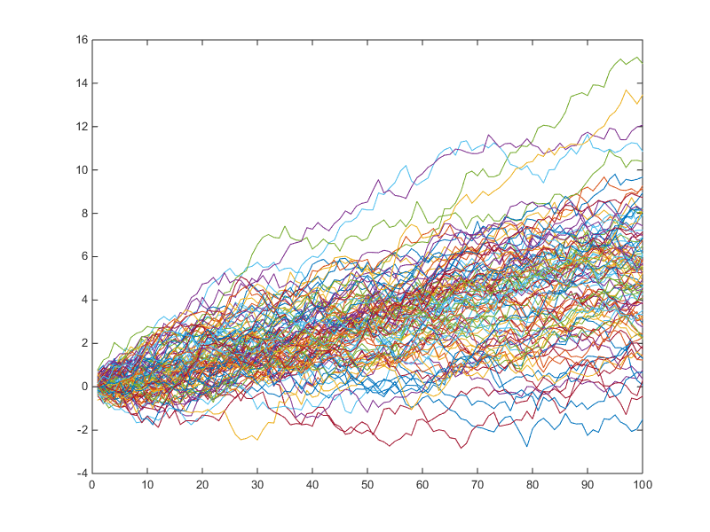
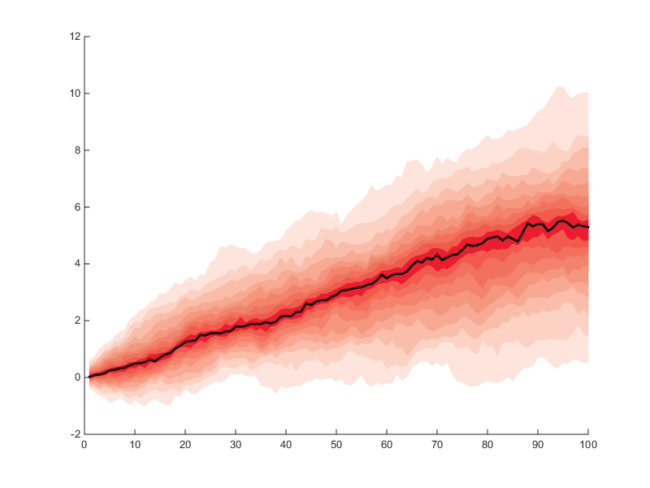

Fanchart visualization examples
These examples demonstrate charting with the fanChart visualization function
Contents
Data
Generate a dataset of simulated time series
rng default
N = 100; M = 100;
ret = rand(N,1)*.1;
data = cumsum(randn(N,M)*.3 + repmat(ret,1,M));
Standard line plot
Visualize data with a standard line plot for comparison
clf plot(data)
Fan chart
Generate a default fanChart with 10% spaced bands around median simulated value
figure fanChart(1:size(data,1), data);
Add legend to fan chart
clf
[lineh, bandsh] = fanChart(1:size(data,1), data);
txt = strcat({'Pct'}, cellstr(int2str((10:10:90)')));
%legend([bandsh;lineh], [txt;{'Median'}])
clickableLegend([lineh;bandsh], [{'Median'};txt])

Mean, fewer percentiles & different colormap
clf; [lineh, bandsh] = fanChart(1:size(data,1), data, 'mean', 10:10:90, ... 'alpha', .2, 'colormap', {'shadesOfColor', [0 0 .8]}); txt = strcat({'Pct'}, cellstr(int2str((20:20:80)'))); %legend([bandsh;lineh], [txt;{'Median'}]) clickableLegend([lineh;bandsh], [{'Mean'};txt])